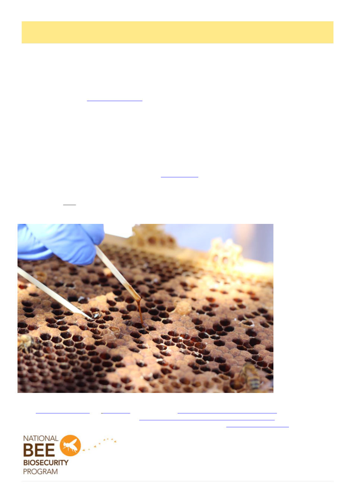

12
Australian Bee Journal
Getting More Value From Your Varroa Monitoring
From Agriculture Victoria
With an increased frequency of hive inspections due to Varroa, beekeepers now have a valuable opportunity to
identify American Foulbrood (AFB) earlier – and avoid significant and preventable costs.
Increased inspections create new opportunities
Increased hive inspection frequency by beekeepers due to Varroa mite provides more regular contact with their
hives and a positive opportunity for the early detection of other well established widespread bee diseases like Ameri-
can Foulbrood.
Unlike Varroa mite, management of AFB is severely limited with no approved controls other than to destroy the
affected hive and sterilise associated equipment and hiveware. AFB is highly contagious and can easily be spread
by beekeepers if undetected.
Identifying AFB early saves you time and money
As profit margins are squeezed with the establishment of Varroa mite across Victoria it is increasingly important
for beekeepers to be assessing where sensible cost savings can be made. Taking advantage of more hive inspections
associated with mite level monitoring and removing affected AFB hives from your apiary before carrying out varroa
treatments is one way of reducing costs.
Barrier systems reduce disease spread and costs
Routine apiary management such as moving hives and the interchange of hive components can unintentionally
spread AFB to healthy bee colonies within your apiary. For larger business operations, with more than one load of
hives that are managed as a single unit, the use of a barrier system can be an effective tool to reduce the risk of AFB
spread. Once a barrier system is established, any AFB outbreaks can be contained to the load/loads that make up
that unit, minimising impacts on the broader business.
Recognising AFB symptoms in the field
Identifying AFB involves looking for an irregular "shotgun" brood pattern, sunken or greasy-looking dark cap-
pings, and a foul, fishy odour. A key diagnostic check is the "rope test," where a matchstick inserted into a dead
larva drags out a sticky, brown thread of 2–5 cm.
Don’t waste money
treating
hives
already
lost
to
AFB
The cost of manag-
ing Varroa will have
a direct impact on
your business’ prof-
itability - and treat-
ing
hives
already
infected with AFB is
an
avoidable
ex-
pense. Make the
most of your in-
creased hive inspec-
tions and don’t just
look for Varroa –
use
this
time
to
check for all bee
pests and diseases.
Implement a barrier
system
to
ensure
AFB, and other pests
and diseases, do not
impact your entire
apiary.
If you are unsure how to identify bee pest and disease in your apiary you can visit a number of web sites includ-
ing Agriculture Victoria and BeeAware or undertake the Biosecurity On Line Training Course which has been up-
dated to reflect the requirements of the new Australian Honey Bee Biosecurity Code of Practice.
For more information on honey bee biosecurity please contact your states Bee Biosecurity Officer.
AFB roping
Photo: Agriculture Victoria
The National Bee Biosecurity Program is funded by the honey bee industry through a
component of the agricultural honey levy, with state governments contributing
In-kind resources. Plant Health Australia manages the program on behalf of the
Australian Honey Bee Industry Council